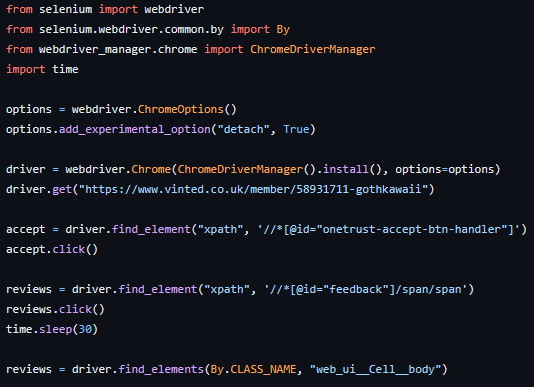

What I have learned today
This page is designed as a diary for my progress in learning code and to hold myself accountable to do and
continue learning. It is a place where I, and others, are able to come and check on my progress to see what material I have covered and which I am yet to learn.
The code will mostly consist of Python and SQL.
12/04/2023 (Python)
I have learned how to use Beautiful Soup and why it is important. It is able to be used to find specific
items in any website so that the data can be analysed.
17/04/2023 (SQL)
I have learned what MySQL and SQL is and what it does, downloaded everything I need to start this new course.
I have learned the basics of how to create databases and tables, how to access the data inside these tables and
DROP/ delete them. Also how to
comment out code and write comments.
18/04/2023 (SQL)
Today I have gained the knowledge to use auto increments, not null and all the basics needed to create a database. I completed an insert exercise where I created a database for employees, this is where their name, age and employment status is kept, along with a primary key.

19/04/2023 (SQL)
Today I have focused on practicing MySQL skills, creating, reading, updating and deleting (CRUD) data to get used to using the command line and workbench together. I found this fun and easy to do so far. I am currently working with data on books and authors. I have also
learned how to use the CONCAT() function.


20/04/2023 (SQL)
I have learned how to use the CONCAT and the SUBSTR functions both separately and combine to output initials of listed authors.

21/04/2023 (SQL)
Today I have learned a lot of different string functions and put them into practice using the book_shop example I started with. These string functions include:
- Upper and lower case
- Replace
- Reverse
- Insert
- Left and Right
- Repeat
- Trim, Trailing and both
24/04/2022 and 25/04/2023 (Python)
Today and yesterday I have struggled with using Selenium with Pycharm. I know that some lessons from the
course I'm taking are out of date. I spent all of yesterday researching and trying to find the best way to
use selenium, this included, how to make the browser stay open for more than one split second. I found two
ways of doing this, one was to import the time module to make it close in 1000 seconds, or the webdriver
options; which I prefer as it's more stable. I have finally got the base code down with a lot of practice
and researching. I have made a short program that allows me to Google anything I type automatically through
selenium.

26/04/2023 (Python)
Today I have learned how more about how to navigate selenium. I have created a projects which holds all of my
reviews from my Vinted account over the past two years. With this data, I am going to sort them into categories
such as 'sent on time' to see my strengths and weaknesses when it comes to people purchasing from my store.

27/04/2023 (SQL)
I have learned how to use distinct and order by, limit and like functions by using the bookshop database.
I am finding learning SQL easier than Python at the moment as I get much more completed. I have learned how
to integrate all of these new functions to get the specific data asked for I have also had practice with
searching for a lie function which has either a % or an _ which would usually produce an error..

28/04/2023 (Python)
Today I hve learned how to create a web server using flask and understand some basic code to run on the
command line which will help me in the future, such as pip installing packages. I have also learned and put
into practice nesting, passing functions and Python decorators which I found relatively simple and will be
a nice addition to my Python knowledge.
02/05/2023 (SQL)
I have learned some more functions today which consist of min and max, sub queries, group by and how to use
them interchangeably. I found the sub queries the most difficult as it has to have two different selects which
run separate but with some practice using the bookshop database, I am able to use it comfortably.

03/05/2023 (Python)
Today I have focused on learning the basics of running a website server using flask, following on from the
28th. The course I was watching was outdated, so I went over to YouTube which helped me get started. With
this I learned how to create views and routes along with rendering HTML, URL parameters and query parameters.
I have found using flask difficult because of the outdated courses however, I will be focusing on this on the
days I learn Python whilst continuing to work on SQL to refine my skills and put them to test.
04/05/2023 and 05/05/2023 (SQL)
Yesterday I focused on trying to analyse my vinted reviews using CSV and Pandas on Pycharm however, I was
finding limited resources online on how to fix the errors in my code. I am still working on getting this
fixed. In the meantime, today, I have imported the review data into MySQL and created a new table and
database. From this I have been able to put to the test all of my new SQL skills I have been learning. I have
managed to analyse and group how many reviews I get to see where my strengths are when posting items
using this app. In previous days I had used web scraping to gather the data from Vinted which I used and
formatted it to be able to be inserted into the SQl table. I have found how many automated reviews I have
got and how many people have complimented the fast shipping. The images show which other groups I decided
to do.

40/212 reviews are me as the buyer so these do not matter.

55/212 said the word 'great' which indicates that they are happy with their purchase and with me as a seller as a whole.


27/212 total specifically mentioned the postage, along with the speed in which the items were sent out.

51/212 mentioned 'love' as either 'lovely seller' or 'love the item' which is one of my strongest attributes.
40/212 reviews are automated which means I get a 5 star positive review if they don't leave one, meaning that this group is not the data I am looking for when it comes to finding out my strong points.